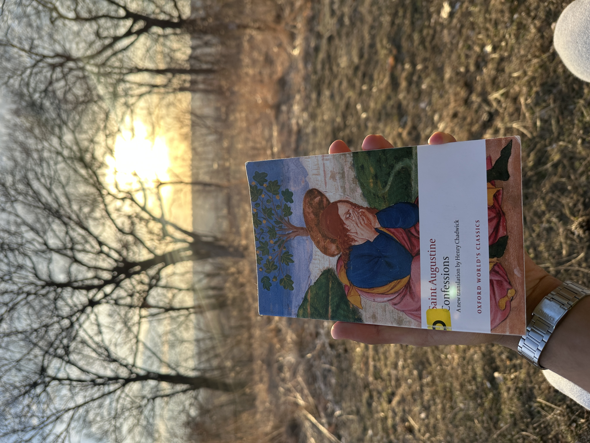
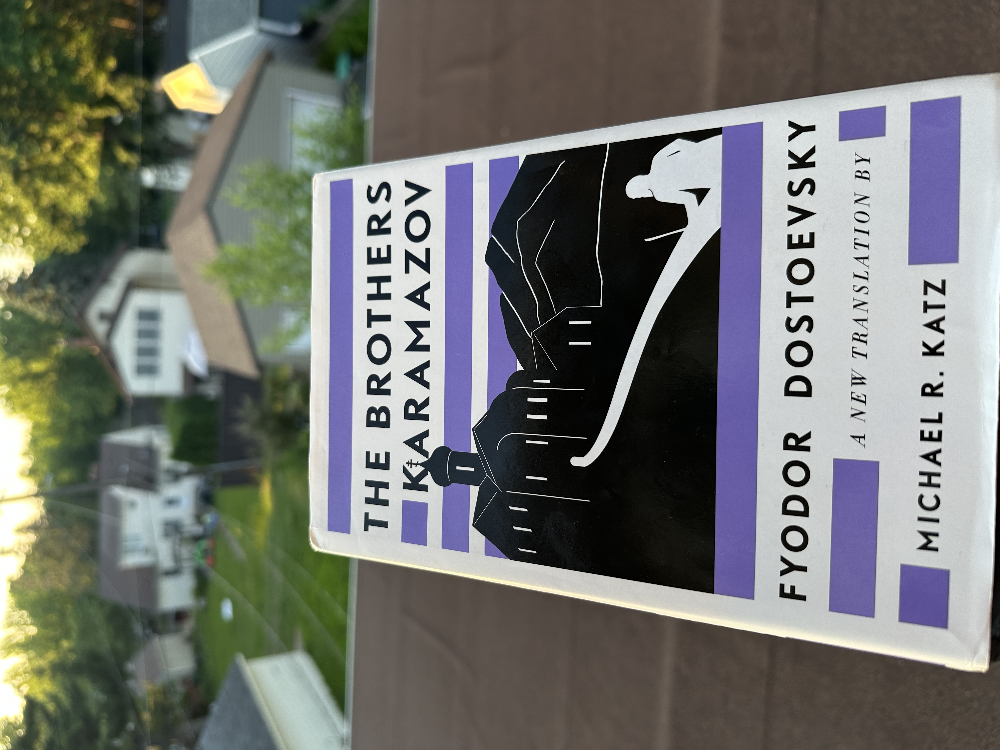
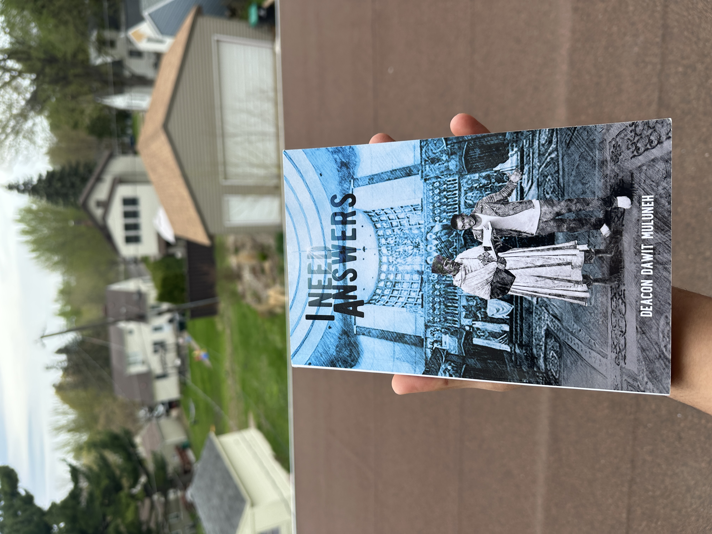

Hi, I'm Hiruy
Degree: B.S. Computer Science, University of St. Thomas
·
Graduating: Dec. 2027
·
GPA: 3.65, Dean's List
·
Location: Minneapolis & St. Paul, MN
Experience & Leadership
Mar. 2026 - Present
Technical Support
University of St. Thomas, ITS Desktop Services & Support
Resolve 15 to 20 hardware, software, and network incidents per week for 9,000+ users across Windows, Mac, and Linux environments, tracking all requests in TeamDynamix. Perform full-time summer deployment of 30+ new workstations per week, handling OS install, software configuration, and domain join across a multi-campus environment. Manage IT asset tracking by cleaning inventory data and logging device assignments.
Jan. 2025 - May 2025
IT Help Desk
St. Olaf College, Northfield, MN
Resolved 50+ tickets per week for 3,000+ users with a 90%+ same-day resolution rate by diagnosing hardware, software, and account issues across Windows and Mac environments.
Fall 2026
AI Dark Patterns Research
University of St. Thomas, Faculty-Sponsored
Conducting faculty-sponsored research on AI dark patterns and digital addiction; designing survey instruments and analyzing manipulative design patterns in consumer AI products.
Nov. 2024 - Present
ColorStack, Member
Engage with a national CS community of 10,000+ members focused on career development and technical growth for underrepresented students in tech.
Sep. 2024 - May 2025
Club Soccer, Second Captain
Led a 20+ person roster, coordinating 2 weekly practices and mentoring teammates to improve team retention.
Skills
Languages
Python
JavaScript
SQL
Java
C++
Bash
Frameworks & Libraries
React
Flask
Node.js
Pandas
BeautifulSoup
pytest
DevOps & Cloud
Docker
GitHub Actions
AWS EC2
AWS VPC
AWS IAM
CloudWatch
S3
Linux
Nginx
Tools
Git
GitHub
VS Code
Draw.io
TeamDynamix
Projects
Ask the Early Church
React
Flask
Python
SQLite
Voyage AI
Docker
AWS
Serves 1,000+ daily active users via a hybrid search engine over 52,000+ passages (247 authors, 2,858 works), fusing Voyage AI vector embeddings with FTS5 keyword search via reciprocal rank fusion and per-work/author diversification. Cut median search latency roughly 40% by parallelizing Voyage AI embedding with Gemini query parsing in a worker thread and caching repeat queries, keeping the corpus in RAM via a float16 loader. Built on a 5-stage ETL pipeline (scrape, clean, chunk, embed, index) and a React + Vite frontend on a Flask REST API, containerized with Docker on AWS EC2 with CI/CD via GitHub Actions, CloudWatch monitoring, and a 2,997-URL SEO sitemap.
FZ Contracting: AI Workflow System Design
Claude AI
Draw.io
System Design
Designed a 6-stage agentic AI workflow automating 5 manual business processes for a real contracting business. Authored a 22-requirement PRD with 4 architecture diagrams mapping API integrations with Google Calendar, Maps, and Twilio SMS.
E-Commerce Funnel & RFM Analysis
Python
Pandas
Claude AI
GitHub Copilot
4-stage data pipeline on 541,909 transactions surfacing a 34.6% first-purchase drop-off, 51.8% revenue concentration in the top 10% of customers, and 1,541 at-risk customers as a win-back opportunity via RFM segmentation.
updated 06/14/2026
Books 📚
A few of the books I've been reading lately.

Confessions
Saint Augustine

The Brothers Karamazov
Fyodor Dostoevsky

I Need Answers
Deacon Dawit Muluneh
updated 06/14/2026
Philosophy & Theology ☦
Essays and reflections on philosophy, theology, and the questions worth wrestling with. Read along on Substack.
updated 06/14/2026